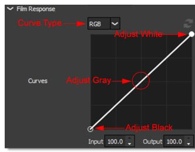
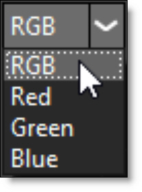

Film Stocks
Description
Film Stocks is a unique filter that simulates 294 different color and black and white still photographic film stocks, motion picture films stocks and historical photographic processes.
Category
Film Lab.
Controls
Presets
To select a preset, pick one from the Presets window. If you would like to view presets from a different category, use the pop-up menu at the top left of the Presets window.
Amount
Sets the amount of the selected preset.
Black and White
Red, Green and Blue controls allow you to determine the contribution of each color channel in the black and white conversion.
Enable
Enables the Black and White conversion.
Red
Sets the amount of the red channel that contributes to the black and white conversion.
Green
Sets the amount of the green channel that contributes to the black and white conversion.
Blue
Sets the amount of the blue channel that contributes to the black and white conversion.
Film Response
To mimic the characteristics of a particular film stock, a combination of settings for the RGB channels have been set.
Curves
You can use Curves to adjust the entire tonal range of an image by changing the shape of the curve in the Curves adjustment. The Curves adjustment lets you adjust points throughout the tonal range of an image (from shadows to highlights).
Note: Curves are only available in the Optics Interface.
Selecting Curves
• Select RGB, Red, Green or Blue from the Curve Type pop-up menu.
• Click directly on an existing curve in the graph to select it.
Adding and Deleting Points:
• Click directly on the curve to add a new point. Up to five points can be added.
• Points can be deleted by clicking and dragging a point to the edge of the graph.
Adjusting Points:
• Moving a point in the top portion of the curve adjusts the shadows.
• Moving a point in the center of the curve adjusts the midtones.
• Moving a point in the top portion of the curve adjusts the highlights.
• Moving the curve upward or downward lightens or darkens the image. The steeper sections of the curve represent areas of higher contrast; flatter sections represent areas of lower contrast.
• To darken highlights, move a point near the top of the curve downward. Moving a point either down or to the right maps the input value to a lower output value, and the image darkens.
• To lighten the shadows, move a point near the bottom of the curve upward. Moving a point either up or to the left maps a lower input value to a higher output value, and the image lightens.
RGB
Controls the RGB film response curve. If you are using a black and white preset, the grayscale film response curve will be adjusted.
Red
Controls the Red film response curve.
Green
Controls the Green film response curve.
Blue
Controls the Blue film response curve.
Color Correct
Go to the Color Correct filter to see how the Color Correct controls work.
Filter
Adds a color filter to the image.
Presets
Select one of the filters from the pop-up menu.
Color
Sets the color through the use of a standard color picker.
Opacity
Sets the opacity of the color filter.
Highlights
Preserves the white areas of the image.
Sharpen
Amount
Determines how much contrast is added at the edges.
Radius
Controls the size of the edges you wish to sharpen.
Threshold
The threshold setting is used to sharpen more pronounced edges, while leaving more subtle edges untouched. Low values sharpen more image areas while higher threshold values sharpen less.
Diffusion
Blend
Determines the blend mode to be used to create the diffusion/glow effect.
Add
The diffusion/glow is added to your image.
Normal
The diffusion is mixed with the original image. In this mode, the Amount slider only shows changes up to a value of 100.
Screen
The diffusion/glow is combined with the image using a Screen blend mode. This looks kind of like the Add blend mode, but highlights are retained.
Amount
Sets the amount of diffusion.
Blur
Sets the softness of the image.
Color
The Color parameter sets the color of the diffusion/glow through the use of a standard color picker or eyedropper. The default color is white.
Position
When using the Add and Screen blend modes, Position selects the values used to create the glow effect. A higher Position value uses the brightest image values to create the glow. A lower Position value uses the darkest image values to create the glow.
Range
When using the Add and Screen blend modes, Range controls the range of values to be used for the glow. Once you’ve selected the “Position”, you can then add or subtract the “Range” of values to be used in the glow source. A higher Range value includes more values in the glow source while a lower Range value includes less values.
Vignette
A vignette is a popular photographic effect where the photo gradually fades into a color.
Color
The Color parameter sets the color of the vignette through the use of a standard color picker. The default color is black.
Opacity
Sets the opacity of the colored vignette. For defocused vignettes, you may want to turn down the Opacity so you can see the defocused effect.
Blur
Sets the softness of the image in the area of the vignette.
Roundness
Sets the roundness of the vignette. The vignette can either be circular or square or anywhere in between.
Size
Sets the size of the vignette.
Aspect Ratio
Changes the aspect ratio of the vignette. A value of -100 would be wider, and 100 would be taller.
Rotation
Rotates the vignette.
Distortion
Distorts the edge of the vignette.
Distortion Size
Sets the size of the distortion.
Randomize
Randomizes the distortion.
Softness
The Softness parameters control the softness of the vignette edge.
Grain
Grain simulates film grain with control of the size, softness and intensity. In addition, a Film Response parameter controls where you will see grain in the image. Go to the Grain filter to see how it works.